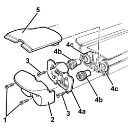
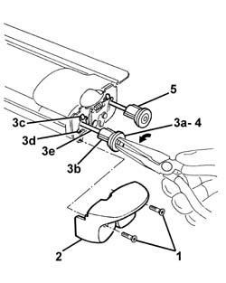
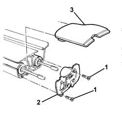
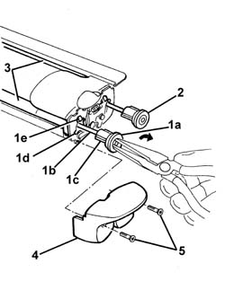

7040B31 LOCK for COMBINED load carrying compartment COVER and PET transportation PROTECTION (one), left or right - R.R .
- Path
- Procedures > 70 FITTINGS > 7040 BODYSHELL INTERIOR TRIMS AND FITTINGS > 7040B luggage compartment and load platform trims > 7040B31 LOCK for COMBINED load carrying compartment COVER and PET transportation PROTECTION (one), left or right - R.R .
- Kind
- repair procedure (removal / refitting; the operation number is the code)
- Applies to
- all engines; all production periods
- Interactive page
- https://sloeber94.github.io/elrnDB-a156/en/#/3238817
Applies to: all engines; all production periods; only with equipment: Station Wagon
 Removing
Removing
 Refitting
Refitting7040B28 PET transport PROTECTION and load carrying compartment COVER COMBINATION BLIND - R.R.
1. Working on the left side of the unit, undo the bolts.
2. Remove the lid.
3. Unscrew the bolts
4. Remove the left lock (4a), releasing the centering bushes (4b) from the rods (4c).
5. If necessary, remove the moulding.

Applies to: all engines; all production periods; only with equipment: Station Wagon
Refitting
RemovingCheck that the lock is undamaged.
Working on the left side of the unit, position the moulding, if removed.
Position the left lock, engaging the centering bushes with the rods.
Tighten the screws.
Position the cover and fix it using the bolts.
7040B28 PET transport PROTECTION and load carrying compartment COVER COMBINATION BLIND - R.R.
Check the operation of the lock.
Applies to: all engines; all production periods; only with equipment: Station Wagon
Removing
Refitting7040B28 PET transport PROTECTION and load carrying compartment COVER COMBINATION BLIND - R.R.
1. Working on the right side of the unit, undo the bolts.
2. Remove the lid.
3. Insert pliers into one of the two retaining bushes (3a) and release the retainers (3b) from the recesses (3c), then extract gently via the openings (3d) without disconnecting from the rod (3e).
Follow the (anti-clockwise) rotation of the bush (3a) to discharge the inner spring pre-loading.
4. Recover the bush (3a).
5. Repeat the steps from 1. to 4. for the other bush.

Applies to: all engines; all production periods; only with equipment: Station Wagon
1. Unscrew the bolts
2. Remove the right lock.
3. If necessary, remove the moulding.

Applies to: all engines; all production periods; only with equipment: Station Wagon
Refitting
RemovingCheck that the lock is undamaged.
Position the right lock and fix it using the bolts.
Working on the left side of the unit, position the moulding, if removed.
1. Insert pliers into one of the two retaining bushes (1a); engage them on the rod (1b) then rotate (in a clockwise direction) to pre-load the inner spring, then insert the bush retainers (1c) via the openings (1d) and engage them in the recesses (1e).
2. Repeat step 1. for the other bush.
3. Check that the spring pre-loading is correct; if not, repeat steps 1. and 2.
4. Position the cover.
5. Tighten the screws.

Applies to: all engines; all production periods; only with equipment: Station Wagon
7040B28 PET transport PROTECTION and load carrying compartment COVER COMBINATION BLIND - R.R.
Check the operation of the lock.